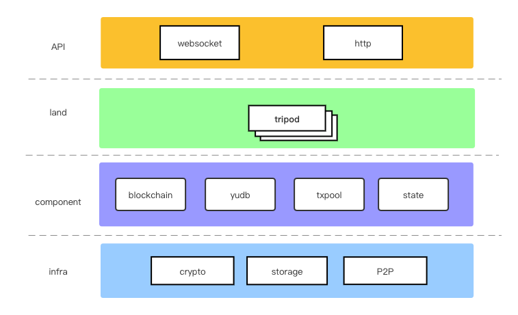

Introduce
Yu is an easy-to-use and highly customizable blockchain framework developed in golang. Most of the existing blockchains (Public Blockchain and Consortium Blockchain) can be developed with yu.
Why do this?
The current blockchain framework either has a high threshold for getting started, or the degree of customization is very low, or the community is inactive and has stopped maintenance. So I developed it myself This blockchain framework. The purpose is to allow developers to get started with the core of blockchain development more easily, quickly and deeply.
What functions can Yu customize
- Customized consensus algorithms, including but not limited to pow, pos, poa, pbft, etc.
- Custom block verification logic, transaction verification logic, rules for packaging transactions from the transaction pool.
- Insert custom actions at various stages of the block generation cycle, including controlling when transactions are executed.
- Custom on-chain transactions (ie Writing, called transactions in Ethereum) and queries
- Custom chain structure (including fork logic) and transaction pool logic
- Can be developed in multiple programming languages (not yet finished)
- You can use [dependency injection] to manage each business module (Tripod)
Quick Start
Install
go get github.com/yu-org/yu
Develop an on-chain Writing and Reading
import (
"github.com/yu-org/yu/apps/pow"
. "github.com/yu-org/yu/core/types"
"github.com/yu-org/yu/env"
"github.com/yu-org/yu/common"
"github.com/yu-org/yu/context"
"github.com/yu-org/yu/startup"
"github.com/yu-org/yu/tripod"
)
type Example struct {
*tripod.Tripod
}
// Here is a custom development of a Writing
func (e *Example) WriteA(ctx *context.WriteContext) error {
caller := ctx.GetCaller()
// set this Writing lei cost (lei and gas are synonymous)
ctx.SetLei(100)
// Store data in on-chain state.
e.Set(caller.Bytes(), []byte("yu"))
// Emit an event.
ctx.EmitStringEvent("execute success")
return nil
}
// Here is a custom development of a Reading
func (e *Example) ReadA(ctx *context.ReadContext) {
key := ctx.GetString("key")
value, err := e.Get(key.Bytes())
if err != nil {
return err
}
ctx.String(string(value))
return nil
}
Add tripods in the main function
func NewExample() *Example {
df := tripod.NewTripod()
e := &Example{df}
// Here you need to manually register the custom Writing to tripod，
e.SetWritings(e.WriteA)
// Here you need to manually register the custom Reading into tripod
e.SetReadings(e.ReadA)
return e
}
func main() {
poaConf := poa.DefaultCfg(0)
startup.InitDefaultKernelConfig()
startup.DefaultStartup(poa.NewPoa(poaConf), NewExample())
}
Run
go build -o yu-poa-example
./yu-poa-example
At this point, a blockchain has been activated. In the future, more blockchain nodes can be added to build a blockchain network。
Fundamental
Process overview

When a transaction is initiated from the client to the chain, it will first be checked by txpool, and only after the check is passed will it be put into the transaction pool and broadcast to other blockchain nodes.
Receive transactions broadcast from other nodes in the P2P network, and put them into txpool after checking (no longer broadcast)
land runs, starts generating blocks, and performs a series of processing on blocks: including mining blocks, broadcasting, validating blocks from other nodes, executing intra-block transactions, storing blocks on the chain, etc. . During this process
There are so many things that can be freely controlled, and you can use it to implement any consensus algorithm, sharding method, block time, package transaction method, choose when to execute transactions, etc. you want. with blockchain,
The interaction of txdb, state is also in this process.
After each block goes through all the custom tripod logic in land, it will enter the next block stage, generate the next block and process it, and the cycle goes on and on.
Components
Core components
The following blockchain, txdb, txpool are all interfaces, with built-in default implementations,
if developers have special needs, they can re-implement the interfaces themselves:
- blockchain: Chain structure, responsible for storing block data and organizing chain structure and fork logic.
- txdb: The database of
yu, which stores the specific transaction data in all blocks,eventanderrorafter the transaction is executed. - txpool: The transaction pool is responsible for validating and caching transactions sent from outside.
- state: Storage state, which stores the state after each transaction(Writing) is executed, such as account balance.
- tripod: The basic minimum unit that runs the blockchain and allows developers to customize logic.
Developers can customize multiple tripods and load their ordered combinations into
landfor the framework to call.
Low-level components
- store: The storage layer supports various forms of storage such as kv, sql, and fs, and they are all interfaces. Developers can specify the required storage engine (for example, kv currently has two storage engines,
badgerandboltdb) Currently the storage instateis implemented usingboltdb, while the storage inblockchainandtxdbis implemented usingsqlite. - p2p: A peer-to-peer transport network, used to discover nodes in the network and propagate transactions and blocks, etc.
- keypair: Asymmetric encryption algorithm for public and private keys, currently supports
sr25519anded25519. This component is in the form of an interface and can extend other encryption algorithms by itself.

Blockchain
The blockchain component is the persistent storage of the blockchain structure, and the chain structure maintained by the entire network. Note: This structure does not store specific transaction data and transaction Writing results. This part of the data is stored in txdb.
Interface
Code is here
blockchain implements the storage and processing logic of the basic chain structure. The following are the interfaces of the core functions. Developers can customize their own chain storage methods and processing logic if required:
func ConvergeType() ConvergeType
ConvergeType() returns the convergence type of the chain (that is, in what form the block was finalized)
As we all know, in the blockchain, multiple nodes may produce blocks at the same moment, thus forming a fork. If it does not converge, the system will not know which chain is the main chain. Therefore, convergence is required, and the most common methods of convergence are:
-
Longest sub-chain (Longest): The longest branch will be considered as the main chain, and this method will be rolled back.
-
Heaviest: The fork with the largest number of sub-chains will be considered as the main chain, and this method will be rolled back.
-
Finalize: The block or chain is voted through voting and other methods to finally finalize a fork to become the main chain. Under normal circumstances, the finalized block cannot be rolled back.
func GetGenesis() (*CompactBlock, error)
func SetGenesis(b *CompactBlock) error
Obtain the genesis block from the chain and store the genesis block into the chain.
func AppendBlock(b *CompactBlock) error
func GetBlock(blockHash Hash) (*CompactBlock, error)
func UpdateBlock(b *CompactBlock) error
AppendBlock(block)adds the block to the end of the chain
GetBlock(blockHash)gets a specific block based on the block hash
UpdateBlock(block)updates block data with block hash as index
func Children(prevBlockHash Hash) ([]*CompactBlock, error)
func Finalize(blockHash Hash) error
func GetEndBlock() (*CompactBlock, error)
func LastFinalized() (*CompactBlock, error)
Children(blockHash) gets all its subblocks based on a block hash
Finalize(blockHash) finals consensus finalizes a block
GetEndBlock() gets the last unfinalized block
LastFinalized() gets the last finalized block
txdb
txdb stores specific transaction data in all blocks, event and error after the transaction is executed.
Interface
Code is here
The following are the interfaces of the core functions. Developers can customize their own txdb if required.
func GetTxn(txnHash Hash) (*SignedTxn, error)
func SetTxn(stxn *SignedTxn) error
GetTxn(txnHash) gets transaction data based on the hash value of the transaction
SetTxn(stxn) stores transaction data in the txdb (indexed by transaction hash)）
func GetTxns(blockHash Hash) ([]*SignedTxn, error)
func SetTxns(blockHash Hash, txns []*SignedTxn) error
GetTxns(blockHash) gets all transaction data in the block according to the block hash
SetTxns(blockHash, txns) stores all transaction data in a block into txdb（Indexed by transaction hash）
func GetEvents(blockHash Hash) ([]*Event, error)
func SetEvents(events []*Event) error
GetEvents(blockHash) gets all events in the block according to the block hash
SetEvents(events） stores all event in txdb (indexed by auto-incrementing ID)
func GetErrors(blockHash Hash) ([]*Error, error)
func SetError(err *Error) error
GetErrors(blockHash) gets all error in the block according to the block hash
SetError(err) stores all error in txdb (indexed by auto-incrementing ID)
Txpool
Code is here
The following are the interfaces of the core functions. Developers can customize their own trading pools if required.
func BaseCheck(*SignedTxn) error
func TripodsCheck(stxn *SignedTxn) error
func NecessaryCheck(stxn *SignedTxn) error
BaseCheck(): when inserts transaction data into the transaction pool, it will do some basic checks. The basic checks are: whether the transaction data is too large, whether the transaction pool capacity has reached the upper limit, whether the signature in the transaction is legal, whether there is
Transactions are repeated. The first three will return an error if the check fails. When the transaction is repeated, the message will be ignored but no error will be returned.
TripodsCheck(): After the basic check of TripodsChecks, the tripods check will be performed, which is the transaction check rule defined by the developer.
NecessaryCheck() represents a necessity check, which only checks whether the transaction data is too large, whether the signature is valid, and the tripods check. After the node receives the block from the P2P network, the synchronization
Check the transaction data in the block, and directly store it in txdb after checking.
func Insert(txn *SignedTxn) error
Insert() means inserting transaction data into the transaction pool. This function has two types of checks, BaseCheck and TripodsCheck. Only after passing the check will it be inserted into the transaction pool, otherwise an error will be returned.
func Pack(numLimit uint64) ([]*SignedTxn, error)
func PackFor(numLimit uint64, filter func(*SignedTxn) error) ([]*SignedTxn, error)
Pack(numLimit) means to pack a maximum of numLimit transactions from the transaction pool. The packaged transactions will be marked, but will not be deleted from the transaction pool immediately.
PackFor(numLimit, filter) has one more filter function than Pack. All packed transactions must pass the filter of filter. If filter returns an error, the transaction will not be packed.
func GetTxn(hash Hash) (*SignedTxn, error)
func Reset(*Block) error
GetTxn(hash) gets transaction data according to the transaction hash value
Reset(*Block) clears the transactions in the given block from the transaction pool as they are already packed.
Tripod
Description
tripod is the core of the entire yu framework, and developers define their own business logic by implementing its interface. It consists of three parts:
- Custom block verification rules and transaction checking logic.
- Control the life cycle of blocks to achieve deep customization development. The life cycle has four phases:
initChain,startBlock,endBlock,finalizeBlock. where onlyinitChainIt is called only at the time of the genesis block, and the last three are called every block. (Personalized consensus algorithms can be implemented with the block life cycle) - Customize
Transaction(Writing),Query(Query) andP2P Request Handling(p2pHandler)
Interface
Code is here
func Name() string
func SetChainEnv(env *ChainEnv)
Name() returns the name of tripod。
SetChainEnv(*ChainEnv) loads ChainEnv into tripod, which is convenient for subsequent calls. (ChainEnv is introduced in context and chainEnv)
func CheckTxn(*SignedTxn) error
func VerifyBlock(block *Block) bool
checkTxn() is a developer-defined transaction check logic. As mentioned in the previous chapter, when an external transaction is inserted into txpool, the two steps of BaseChack and TripodsCheck will be executed.
And TripodsCheck is defined here, each tripod can define its own transaction check logic.
VerifyBlock() is a developer-defined block verification logic. Every time the blockchain receives a block from external broadcast, it needs to be verified before it can be processed. Different chains have different verifications for blocks. test method, so
Developers can customize the validation logic by themselves. Each tripod can define its own transaction checking logic.
func InitChain()
func StartBlock(block *Block)
func EndBlock(block *Block)
func FinalizeBlock(block *Block)
InitChain() will only be called once when the blockchain is started, and it is specially used to define and process the genesis block.
StartBlock() defines the logic of the stage when the block is generated.
EndBlock() defines the logic at the end of the block, where the transaction is generally executed and the block is stored in the blockchain.
FinalizeBlock() defines the logic of the block's finalize phase (i.e. final consensus). If the blockchain is a finalize type chain, you need to customize this part of the logic, otherwise it is not necessary.
Dependency Injection
We may develop many Tripods in yu, and there may be dependencies between different Tripods. For example, when a developer develops a Tripod named staking, it may need to rely on the asset Tripod.
In order to facilitate developers to manage Tripod dependencies more conveniently. yu provides the function of dependency injection.
type Staking struct {
*tripod.Tripod
asset *asset.Asset `tripod:"asset"`
}
As shown above, it is known that we already have an Asset Tripod. Now we develop the pledge module, which needs to rely on the assets in the asset
Some functions, then we only need to declare the asset variable in the Staking structure and add a tag (tripod:"asset").
This is a fixed syntax tripod:<TripodName>, after adding, we just need to start yu normally:
startup.SyncAndStartup(Staking.New(), asset.NewAsset())
Simple as above. SyncAndStartup() is a necessary step to start yu, you only need to call it once in your code, Startup() will automatically load these Tripods and complete dependency injection at runtime.
land
land is used to load all tripods for the framework to call.
land internal flow chart

State
state is the state storage on the chain. For example, after A initiates an on-chain transfer to B, the account balance information of A and B will be stored. Below we refer to all operations on the state store in each transaction as a transaction.
Transactions in state are atomic. For example, there are 3 operations that modify the state in a transaction, then these 3 operations can either be modified successfully, or none of them are successful.
eg:
func (a *A) DoTest(ctx *context.WriteContext) error {
a.State.Set(a, []byte("yu"), []byte("yu")) // 1. Mute state
err := DoOther()
if err != nil {
return err
}
a.State.Set(a, []byte("qi"), []byte("qi")) // 2. Mute state
}
In the above code, there are two Mute state operations. If the code executes successfully in the first place, but returns an error in DoOther(), then the modify state in the second place cannot be completed. at this time
The framework will also cancel the first state modification to ensure atomicity.
Currently, only the storage form of kvdb is supported internally. The state is stored in blocks, and the transactions in each block are executed in sequence and stored in the database.
Code is here
func StartBlock(blockHash)
StartBlock() is called during the start block phase of the blockchain operation to tell state the current block hash.
func SetCanRead(blockHash)
SetCanRead() sets the state in the block that can currently be read. After a block transaction is executed and stored in the chain, it may not be allowed to be read immediately, especially the finalize type chain, which requires
The result state of the Writing in the block can not be read by the outside world until the block is finalized. Of course non-finalized chains can be read as soon as the block is stored in the chain.
func Commit() (Hash, error)
Commit() commits all transactions in the block and returns the stateroot of the state tree under the block.
func Discard()
Discard() discards current transaction.
func DiscardAll()
DiscardAll() discards all transactions in the current block.
func NextTxn()
NextTxn() indicates that the current transaction is completed and the next transaction is started.
P2P network
p2p is the network foundation of the blockchain. For a customizable blockchain framework, yu allows developers to freely use the functions of the P2P network, and developers can call it in ChainEnv.
The underlying implementation of this interface comes from libp2p
Interface
Code is here ，the core functions are as follows：
LocalID() peer.ID
GetBootNodes() []peer.ID
ConnectBootNodes() error
LocalID() returns local p2p ID
GetBootNodes() returns the p2p IDs of the bootnodes nodes in the p2p network, bootnodes are configured in the configuration file.
ConnectBootNodes() connects these bootnodes
AddTopic(topicName string)
PubP2P(topic string, msg []byte) error
SubP2P(topic string) ([]byte, error)
AddTopic() adds a topic to the P2P network, which is used as a topic for subscription publishing.
PubP2P() publishes messages into the topic
SubP2P() subscribes messages from the topic
RequestPeer(peerID peer.ID, code int, request []byte) (response []byte, err error)
SetHandlers(handlers map[int]dev.P2pHandler)
RequestPeer() sends request data to a specific p2p node, code is the request category, which can be customized. (except 100 and 101, these two are predefined code of the framework, 100 is used when P2P node connection comparison data;
101 is used when synchronizing transaction data)
SetHandlers() is set to handle requests from the P2P network, each code corresponds to a handler, the interface of handler is here , developers can customize the logic here.
Development Manual
This chapter will go into the details of how to develop a blockchain with yu. i.e. how to build your own tripod.
The default path of the configuration file is yu_conf/kernel.toml. If you need to configure it separately, please use -k to specify the path of the configuration file.
Of course, if you don't want to configure the file yourself, you can also use -dc to enable the system default configuration. However, it should be noted that the default configuration of the system does not connect to any bootnodes.
Config File
The format of the yu configuration file is .toml.
The configuration content is divided into the following parts， code is here
- Node Config
- each Component Config
- P2P Config
The default configuration file path for yu is yu_conf/kernel.toml. Of course, if you don't want to fill in the configuration file manually, you can also enable the command line as in [Quick Start] (2. Quick Start.md)
-dc=true to take advantage of the default configuration. The source address of the default configuration is here
节点配置
源码样式：
// 0: local-node
//1: master-worker
RunMode RunMode `toml:"run_mode"`
// serve http port
HttpPort string `toml:"http_port"`
// serve websocket port
WsPort string `toml:"ws_port"`
// log out level:
// panic, fatal, error, warn, info, debug, trace
LogLevel string `toml:"log_level"`
LeiLimit uint64 `toml:"lei_limit"`
- Runmode: the node operation mode, 0 is for single-node operation, 1 is for
master-workeroperation (master-workeris not currently supported) - HttpPort: http listening address, port configuration for serving external calls.
- WsPort: the websocket listening address, the port configuration for serving external calls.
- LogLevel: print the level of the log, from top to bottom, there are
panic,fatal,error,warn,info,debug,trace - LeiLimit：the upper limit of
leithat can be consumed per block
配置示例：
run_mode = 0
http_port = "7998"
ws_port = "8998"
log_level = "info"
lei_limit = 50000
各组件配置
blockchainconfig codes:
type BlockchainConf struct {
ChainDB SqlDbConf `toml:"chain_db"`
}
- ChainDB: The sql database used to store the blockchain.
txdbconfig codes:
type txdbConf struct {
BaseDB SqlDbConf `toml:"base_db"`
}
- BaseDB: The sql database used to store
txdb.
txpoolconfig codes:
type TxpoolConf struct {
PoolSize uint64 `toml:"pool_size"`
TxnMaxSize int `toml:"txn_max_size"`
}
- PoolSize: The size of the transaction pool, if it exceeds this size, subsequent transactions will not be put into the transaction pool.
- TxnMaxSize：The data size of the maximum transaction, if a transaction exceeds this configuration, it will not be put into the transaction pool.
stateconfig codes:
type StateConf struct {
KV StateKvConf `toml:"kv"`
}
At present, state only supports kvdb storage method, and more storage forms will be opened in the future
Config Example:
[block_chain.chain_db]
sql_db_type = "sqlite"
dsn = "chain.db"
[yu_db.base_db]
sql_db_type = "sqlite"
dsn = "txdb.db"
[txpool]
pool_size = 2048
txn_max_size = 1024000
[state.kv.index_db]
kv_type = "bolt"
path = "./state_index.db"
[state.kv.node_base]
kv_type = "bolt"
path = "./state_base.db"
p2p Config
Config codes:
// For listening from blockchain network.
P2pListenAddrs []string `toml:"p2p_listen_addrs"`
// To connect other hosts as a p2p network.
Bootnodes []string `toml:"bootnodes"`
ProtocolID string `toml:"protocol_id"`
// 0: RSA
// 1: Ed25519
// 2: Secp256k1
// 3: ECDSA
NodeKeyType int `toml:"node_key_type"`
NodeKeyRandSeed int64 `toml:"node_key_rand_seed"`
NodeKey string `toml:"node_key"`
// Only RSA has this param.
NodeKeyBits int `toml:"node_key_bits"`
// When use param 'NodeKey', 'NodeKeyFile' will not work.
NodeKeyFile string `toml:"node_key_file"`
- P2pListenAddrs: Indicates the address of the P2P protocol that the blockchain node listens to
- Bootnodes: Link other blockchain nodes in the P2P network to synchronize historical blocks
- ProtocolID: Customized protocol name in P2P network
- NodeKeyType: The encryption type of the key of the P2P node, which is used to generate the key of the p2p address.
- Four encryption algorithms are currently supported:
0:RSA1:Ed255192:Secp256k13:ECDSA
- NodeKeyRandSeed: Generate the seed of the key of the p2p node, which is used to generate the key of the P2P address. When this item is not empty, there is no need to configure
NodeKey. - NodeKey：The key of the P2P address, used to generate the p2p address. When
NodeKeyRandSeedis not empty, this item can be left blank. - NodeKeyBits: The bits of the key. This configuration is only required for the encryption algorithm
RSA. Other types of encryption algorithms do not need to configure this parameter. - NodeKeyFile: Read the key file of the p2p address. Only when
NodeKeyis empty, the system will read this configuration item.
Config Example：
p2p_listen_addrs = ["/ip4/127.0.0.1/tcp/8887"]
protocol_id = "yu"
node_key_type = 1
node_key_rand_seed = 1
Context and ChainEnv
In Quick Start, we have seen how to customize an Writing, there are two parameters here, one is context, the other is ChainEnv, they represent two different
the use of.
Context represents contextual information for interactions with off-chain. It includes caller address, passed parameters 、
event、error。
- The parameters passed in by the client caller (that is, the person who initiated the transaction) will be serialized in the form of json and stored in
contextin the form ofstring -> interface{}map. We usecontextto get thecryptographic addressof the client caller and theparameterspassed in by the caller. fromcontextWhen getting parameters, you can use any go basic type to get parameters. If the parameter type is custom, you need to obtaininterfacethroughcontext.Get(paramName)and then convert it yourself. The types of parameters that can be directly obtained are:
common.Hash([32]byte)
common.Address([20]byte)
string
[]byte
bool
int, int8, int16, int32, int64
uint, uint8, uint16, uint32, uint64
float32, float64
- At the same time, if you need to return
eventout of the chain, you also need to complete it throughcontext(ctx.EmitEvent([]byte)).
ChainEnv contains all environment components related to all chains, including blockchain,
txdb, txpool, state, Execute, P2pNetwork. Components that can be directly manipulated by developers to the bottom layer of the framework.
Writing and Reading
Under normal circumstances, developers will use more Writing and Reading, because these are basically external read and write interfaces at the business level. So in this section we look at how in yu
use them. The code is here
Defined as follows:
type (
Writing func(ctx *WriteContext) error
Reading func(ctx *ReadContext) error
P2pHandler func([]byte) ([]byte, error)
)
-
Writingis calledtransactionin other blockchains such as Ethereum. In the final analysis, it isa write operation to the state on the chain, so such an operation will be synchronized to the entire network. When you need to modify the state on the chain, you need to callchainEnv.KVDBto modify the state. Note that the first parameter of theset,get,deletefunctions inchainEnv.kvdbmust be the currenttripodPointer, such ase.State.Set(e, ..., ...)in Quick Start
currentBlockis the block that the current transaction is in.
ctx.EmitEvent()is called wheneventneeds to be sent off-chain. -
Readingis an on-chain query. It does not modify the on-chain state, so the operation will not be synchronized to the entire network.
Status query callsenv.KVDB.Get()orenv.KVDB.GetByBlockHash(). The former is to query the status that the final consensus has been reached on the main chain; the latter is to query the status of a specific block. historical state.
respObjis used to return the queried status value to the off-chain. -
P2pHandleris to define and process requests from the P2P network. For example, when a node needs to broadcast or send a processing request to a specific node, this function can be customized to complete the custom function. -
Inject into Tripod：When building all ourWritingandReading, we need to calltripod.SetWritings()to inject allWritingintotripod, And calltripod.SetReadings()to inject allReadingintotripod. -
Load into land：The framework provides a SyncAndStartup entry as long as the startup Load all thetripods we built by callingSyncAndStartup(...Tripod), thereby telling the framework whichtripods we have customized.
About defaultTripod
[defaultTripod](https://github.com/yu-org/yu/blob/master/tripod/ default_tripod.go)
It can help you write a lot less code, you need to put it in the first member variable of the tripod structure of your custom implementation (you must omit the variable name to achieve the effect of inheriting defaultTripod).
as follows：
type Example struct {
*tripod.Tripod
}
Block Lifecycle
Previous has introduced the concept of block cycle in tripod in detail. By customizing the block cycle, we can implement many deep functions, such as consensus algorithms. Below we use
Take pow consensus as an example, the original code address here
- Init blockchain，build a genesis block.
func (p *Pow) InitChain() error {
// build a genesis block and append chain.
chain := p.env.Chain
gensisBlock := &types.Block{
Header: &types.Header{},
}
err := chain.SetGenesis(gensisBlock)
if err != nil {
return err
}
// Start a gorotine to pull data from other nodes in the P2P network in real time
go func() {
for {
msg, err := p.env.P2pNetwork.SubP2P(StartBlockTopic)
if err != nil {
logrus.Error("subscribe message from P2P error: ", err)
continue
}
p.msgChan <- msg
}
}()
return nil
}
- Block starts，build a new block
func (p *Pow) StartBlock(block *Block) error {
pool := p.env.Pool
// If a block from another node is received before the local node produces a block, the mining will be skipped after verification and the block will be directly stored in the chain.
// If there is none or the block is invalid, the local node starts mining.
if p.UseBlocksFromP2P(block) {
logrus.Infof("--------USE P2P block(%s)", block.Hash.String())
return nil
}
// Pack transactions from txpool.
txns, err := pool.Pack(p.packLimit)
if err != nil {
return err
}
......
// Start to mining.
nonce, hash, err := spow.Run(block, p.target, p.targetBits)
if err != nil {
return err
}
......
// After mining, the block is broadcast to the P2P network.
return p.env.P2pNetwork.PubP2P(StartBlockTopic, rawBlockByt)
}
- End block
func (*Pow) EndBlock(block *Block) error {
chain := p.env.Chain
pool := p.env.Pool
// Execute the transactions of the block.
err := p.env.Execute(block)
if err != nil {
return err
}
// Store blocks in the chain for persistence.
err = chain.AppendBlock(block)
if err != nil {
return err
}
return pool.Reset(block)
}
- Final consensus, finalizing the block：
Since the pow consensus generally does not require the finalization stage of the final consensus, because they have the longest sub-chain or the heaviest sub-chain to prove the computing power. So here we don't need to implement
FinalizeBlock().
func (*Pow) FinalizeBlock(_ *Block) error {
return nil
}
So far, a pow consensus mechanism based on sha256 is completed.
Build a blockchain network
When we have completed the configuration file, we can start building the blockchain network by ourselves.
In this chapter, we choose to compile example to start the blockchain node, in this example
Loaded with pow consensus and asset module.
Of course, we can also customize tripod to replace pow and asset or add more tripod.
First we use the configuration file to start the first blockchain node locally:
INFO[0000] register Writing(Transfer) into Tripod(asset)
INFO[0000] register Writing(CreateAccount) into Tripod(asset)
INFO[0000] register Query(QueryBalance) into Tripod(asset)
INFO[2021-07-25 11:11:09] I am /ip4/127.0.0.1/tcp/8887/p2p/12D3KooWHHzSeKaY8xuZVzkLbKFfvNgPPeKhFBGrMbNzbm5akpqu
INFO[2021-07-25 11:11:11] start block...................
INFO[2021-07-25 11:11:11] prev-block hash is (0x0000000000000000000000000000000000000000000000000000000000000000), height is (0)
INFO[2021-07-25 11:11:11] [[[Mining a new Block!!!]]]
655111533297e8df7319ce54a0ed74f643940831f388211a1fe985960c82fe75
INFO[2021-07-25 11:11:11] append block(1)
INFO[2021-07-25 11:11:13] start block...................
INFO[2021-07-25 11:11:13] prev-block hash is (0x0000337defe7b4412c872bd42a6d21626ea6a57c3d695379efb8b447d67a1bbd), height is (1)
INFO[2021-07-25 11:11:13] [[[Mining a new Block!!!]]]
c64e251d8617a96b80a1d8ff5b74cceef20fa9750bdbc7d095f87791ce01fc88
INFO[2021-07-25 11:11:13] append block(2)
INFO[2021-07-25 11:11:15] start block...................
INFO[2021-07-25 11:11:15] prev-block hash is (0x00005ecc8b50fbc01d32330c5cdd1574a1f0ead527a94f54f326ecaad0473ffb), height is (2)
INFO[2021-07-25 11:11:15] [[[Mining a new Block!!!]]]
819da2117ca553f098a1b16c1ad95f2e10498a5df855f5980d8a54c183b302e2
b062934ef239c48553a43591d451878a1f31abe0a72400f18d7daf4055e22625
INFO[2021-07-25 11:11:15] append block(3)
Note: In the information output above, the string of addresses after I am is the p2p address generated by node1 itself, and node 2 and node 3 need to connect to this address to build a blockchain network.
Then we write the configuration file in another path to deploy the second node and start it:
INFO[0000] register Writing(Transfer) into Tripod(asset)
INFO[0000] register Writing(CreateAccount) into Tripod(asset)
INFO[0000] register Query(QueryBalance) into Tripod(asset)
INFO[2021-07-25 11:11:17] I am /ip4/127.0.0.1/tcp/8886/p2p/12D3KooWEsGugZfk1eWUGf4oUXksvfA9QoCX8etf745SVEyiZFXQ
INFO[2021-07-25 11:11:17] start to sync history from other node
INFO[2021-07-25 11:11:17] fetch history blocks from (1) to (3)
INFO[2021-07-25 11:11:19] start block...................
INFO[2021-07-25 11:11:19] prev-block hash is (0x000046787b43397f7aa4bd1b59ecc9a25e0691086db15ef1613c0e7eeefe3c9a), height is (3)
INFO[2021-07-25 11:11:19] USE P2P block(0x00007536afbeaf2ed6e84c449b7b17836280490711b85e676b77c21d75d31f22)
INFO[2021-07-25 11:11:19] append block(4)
INFO[2021-07-25 11:11:21] start block...................
INFO[2021-07-25 11:11:21] prev-block hash is (0x00007536afbeaf2ed6e84c449b7b17836280490711b85e676b77c21d75d31f22), height is (4)
INFO[2021-07-25 11:11:21] USE P2P block(0x0000ebd7752fc71f0cc27740763c27ec9db87dd91fd781f07316744c98196806)
INFO[2021-07-25 11:11:21] append block(5)
In the output of the above figure, fetch history blocks from (1) to (3) means that when node 2 starts, the history blocks from height 1 to 3 are obtained from node 1
Finally, we write the configuration file in the third path to deploy the second node and start it:
INFO[0000] register Writing(Transfer) into Tripod(asset)
INFO[0000] register Writing(CreateAccount) into Tripod(asset)
INFO[0000] register Query(QueryBalance) into Tripod(asset)
INFO[2021-07-25 11:11:24] I am /ip4/127.0.0.1/tcp/8885/p2p/12D3KooWGcd7wei9ndo1uSZKap3s8X2E3kxN674xGo8prJUBSezD
INFO[2021-07-25 11:11:24] start to sync history from other node
INFO[2021-07-25 11:11:24] fetch history blocks from (1) to (7)
INFO[2021-07-25 11:11:26] start block...................
INFO[2021-07-25 11:11:26] prev-block hash is (0x00002b56e478552f309b208e90cae288f8f809e2ccefd788730d55ea5e39e1e1), height is (7)
INFO[2021-07-25 11:11:26] USE P2P block(0x0000f86034bf5e2fe3cd308d08ad0dab1b61c41e7f722c489c14e1215acd0990)
INFO[2021-07-25 11:11:26] append block(8)
INFO[2021-07-25 11:11:28] start block...................
INFO[2021-07-25 11:11:28] prev-block hash is (0x0000f86034bf5e2fe3cd308d08ad0dab1b61c41e7f722c489c14e1215acd0990), height is (8)
INFO[2021-07-25 11:11:28] USE P2P block(0x000018f47c74dafca4a54596d5284fb320050f1cd3817a87864074cb602e2d15)
INFO[2021-07-25 11:11:28] append block(9)
In the output of the above figure, fetch history blocks from (1) to (7) indicates that when node 3 starts, the history blocks from height 1 to 7 are obtained from node 1
Node1 Config
run_mode = 0
http_port = "7999"
ws_port = "8999"
log_level = "info"
log_output = "yu.log"
lei_limit = 50000
timeout = 60
[p2p]
p2p_listen_addrs = ["/ip4/127.0.0.1/tcp/8887"]
protocol_id = "yu"
node_key_type = 1
node_key_rand_seed = 1
[kvdb]
kv_type = "bolt"
path = "./yu.db"
[block_chain.chain_db]
sql_db_type = "sqlite"
dsn = "chain.db"
[txpool]
pool_size = 2048
txn_max_size = 1024000
Node2 Config
run_mode = 0
http_port = "7998"
ws_port = "8998"
log_level = "info"
log_output = "yu.log"
lei_limit = 50000
timeout = 60
[p2p]
p2p_listen_addrs = ["/ip4/127.0.0.1/tcp/8886"]
# This configuration is the P2P address printed out when node 1 starts up
bootnodes = ["/ip4/127.0.0.1/tcp/8887/p2p/12D3KooWHHzSeKaY8xuZVzkLbKFfvNgPPeKhFBGrMbNzbm5akpqu"]
protocol_id = "yu"
node_key_type = 1
[kvdb]
kv_type = "bolt"
path = "./yu.db"
[block_chain.chain_db]
sql_db_type = "sqlite"
dsn = "chain.db"
[txpool]
pool_size = 2048
txn_max_size = 1024000
Node3 Config
run_mode = 0
http_port = "3998"
ws_port = "3998"
log_level = "info"
log_output = "yu.log"
lei_limit = 50000
timeout = 60
[p2p]
p2p_listen_addrs = ["/ip4/127.0.0.1/tcp/8885"]
# This configuration is the P2P address printed out when node 1 starts up
bootnodes = ["/ip4/127.0.0.1/tcp/8887/p2p/12D3KooWHHzSeKaY8xuZVzkLbKFfvNgPPeKhFBGrMbNzbm5akpqu"]
protocol_id = "yu"
node_key_type = 1
[block_chain.chain_db]
sql_db_type = "sqlite"
dsn = "chain.db"
[kvdb]
kv_type = "bolt"
path = "./yu.db"
[txpool]
pool_size = 2048
txn_max_size = 1024000